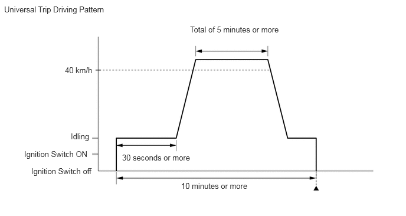
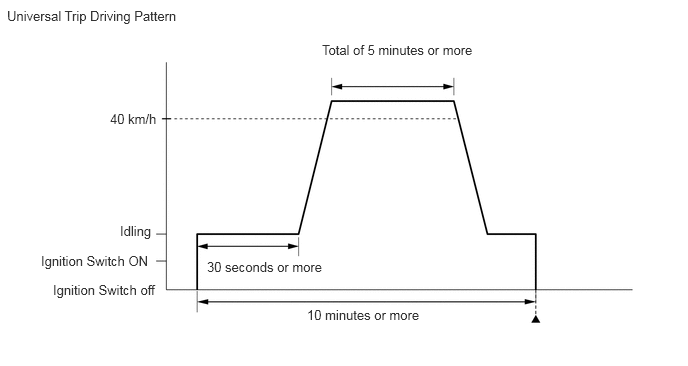

| Last Modified: 10-07-2025 | 6.11:8.1.0 | Doc ID: RM100000002HBSE |
| Model Year Start: 2024 | Model: Tacoma | Prod Date Range: [12/2023 - ] |
| Title: STOP AND START: STOP AND START SYSTEM: DTC CHECK / CLEAR; 2024 - 2026 MY Tacoma Tacoma HV [12/2023 - ] | ||
DTC CHECK / CLEAR
OUTLINE
- After clearing current DTCs using the GTS (or by disconnecting the cable from the negative (-) battery terminal), permanent DTCs can be cleared when the universal trip is performed and then the system is determined to be normal for the relevant DTCs. The driving pattern to obtain a normal judgment is described under the "Confirmation Driving Pattern" for the respective DTC.
- To clear permanent DTCs, all of the following
conditions must be are met:
- There is a history that universal trip driving was performed.
- The vehicle has been judged as normal for 1trip. (not for misfire and fuel system DTCs)
- No malfunctions are detected.
CLEAR PERMANENT DTC
(a) Connect the GTS to the DLC3.
(b) Turn the ignition switch to ON.
(c) Turn the GTS on.
(d) Enter the following menus: Powertrain / Stop and Start / Trouble Codes.
Powertrain > Stop and Start > Trouble Codes
HINT:
If "PERMANENT" in the top right of the screen displays "YES", permanent DTCs are stored.
(e) Select the "Generic" tab.
(f) Check if permanent DTCs are stored.
HINT:
If permanent DTCs are not output, it is not necessary to continue this procedure.
(g) Clear the DTCs.
Powertrain > Stop and Start > Clear DTCs
NOTICE:
Do not clear the DTCs or disconnect the cable from the battery terminal after performing this step.
(h) Perform the universal trip.
HINT:
The driving pattern to obtain a normal judgment and the universal trip driving can be performed consecutively in the same driving cycle.
 

- Start the engine and wait for 30 seconds or more.
- Drive the vehicle at 40 km/h (25 mph) or more for
a total of 5 minutes or more.
CAUTION:
When performing a driving pattern, obey all speed limits and traffic laws.
HINT:
It is possible to complete the drive pattern even if the vehicle decelerates to less than 40 km/h (25 mph) during the driving cycle provided that the vehicle is driven at 40 km/h (25 mph) or more for a total of 5 minutes.
- Allow 10 minutes or more to elapse from the time the engine started.
(i) Turn the ignition switch off and wait for 2 minutes or more.
(j) Turn the ignition switch to ON.
(k) Enter the following menus: Powertrain / Stop and Start / Trouble Codes.
Powertrain > Stop and Start > Trouble Codes
(l) Check that the permanent DTCs have been cleared.
HINT:
If permanent DTCs are not output, it is not necessary to continue this procedure.
(m) Perform the normal judgment procedure in the respective confirmation driving pattern of each output DTC.
HINT:
- Confirmation driving patterns do not need to be performed for misfire and fuel system DTCs.
- Do not turn the ignition switch off by mistake during this step.
(n) Start the engine and wait for 5 seconds or more.
(o) Turn the ignition switch off and wait for 2 minutes or more.
(p) Turn the ignition switch to ON.
(q) Enter the following menus: Powertrain / Stop and Start / Trouble Codes.
Powertrain > Stop and Start > Trouble Codes
(r) Check that the permanent DTCs have been cleared.